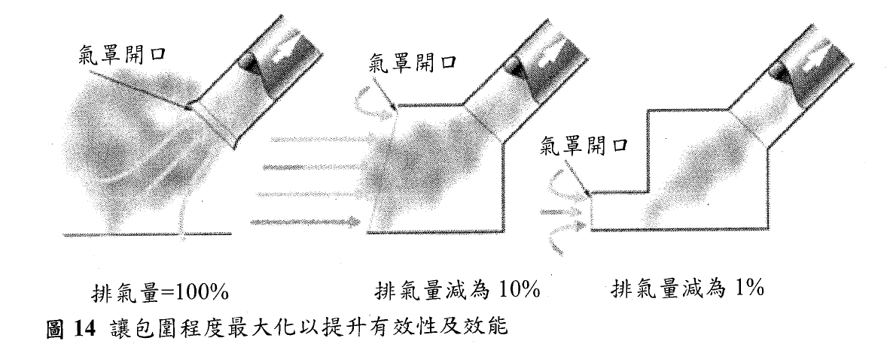

一、 局部排氣目的、使用時機
- 局部排氣（Local Exhaust Ventilation, LEV）
- 指藉動力強制吸引並排出已發散有害物之設備。(有機/粉塵)
- LEV is an engineering control system to reduce exposures to airborne contaminants such as dust, mist, fume, vapour or gas in a workplace. (HSG 258)
A、 局部排氣的核心目的與優勢
空氣中有害物? (部分特性)
| 名稱 (Name) |
說明與粒徑 (Description and size) |
可見度 (Visibility) |
範例 (Examples) |
粉塵
(Dust) |
固體微粒－由物料處置提供（例如粉體搬運），或由製程產生（例如粉碎與研磨）。
• 可吸入性微粒粒徑：\(0.01\ \mu\text{m}\) 至 \(100\ \mu\text{m}\)
• 可呼吸性微粒粒徑：\(10\ \mu\text{m}\) 以下 |
在一般光線下：
• 可吸入性粉塵雲為部分可見。
• 可呼吸性粉塵雲在濃度高達數十 \(\text{mg/m}^3\) 時，實際上仍看不見。 |
穀物粉塵、木屑、矽粉。 |
燻煙
(Fume) |
固體蒸發（汽化）後再冷凝而成之微粒。
• 微粒粒徑：\(0.001\ \mu\text{m}\) 至 \(1\ \mu\text{m}\) |
燻煙雲往往較為密集。它們是部分可見的。燻煙及煙霧（smoke）通常比相同濃度的粉塵更容易被肉眼看見。 |
橡膠燻煙、銲錫燻煙、焊接燻煙。 |
霧滴
(Mist) |
液態微粒－由製程所產生（例如透過噴塗）。
• 微粒粒徑範圍：\(0.01\ \mu\text{m}\) 至 \(100\ \mu\text{m}\)，但當揮發性液體蒸發時，其粒徑分布可能會發生改變。 |
同粉塵 |
電鍍、噴漆、水蒸汽。 |
纖維
(Fibres) |
固體微粒－其長度為直徑的數倍。
• 微粒粒徑：同粉塵 |
同粉塵 |
石綿、玻璃纖維。 |
蒸氣
(Vapour) |
物質的氣相狀態，該物質在常溫（室溫）下通常為液態或固態。
• 其行為表現如同氣體。 |
通常看不見。
在極高濃度下，充滿蒸氣的雲霧可能勉強可見。 |
苯乙烯、汽油、丙酮、汞（水銀）、碘。 |
氣體
(Gas) |
在常溫（室溫）下即為氣態的物質。 |
通常看不見－有些氣體在高度濃縮時會帶有顏色。 |
氯氣、一氧化碳。 |
粒徑超過100 微米之粉塵為不可吸入性，因大到無法被吸入，它們會自空氣中沉降到樓池板及製程附近表面。
粉塵
大部分來自有機物，例如木材或麵粉的粉塵塵雲中的粒狀物，主要是可吸入性的，少部分屬可呼吸性粉塵。
大部分來自礦物（例如石頭、混凝土）的粉塵塵雲中的粒狀物，主要是可呼吸性的，少部分屬吸入性粉塵，但此較大粒狀物佔了大部分之粉塵重量。
肉眼很難看得見氣懸塵雲的全貌，有些狀況下，例如當所有粒狀物粒往都小於可吸入性”時，此塵雲將完全不可見
較小之粒狀物會懸浮在空氣中（可達數分鐘），並隨氣流運動，意即，如果製程產生快速氣流（如畊磨輪或圓盤鋸），細微粉塵將會被帶至離有害物發生源較遠處，使粉塵控制變得困難。
製程產生的與製程相關之物質（粉塵丶燻煙、霧滴）可能具磨損性或黏性，或容易冷凝，有些可能具易燃性，這些特性要納入局部排氣設計考量。
粒狀物粒徑與吸入沉降位置
粉塵危害在於顆粒大小以及在呼吸道中的沉積位置
- 遵循國際標準化組織（ISO）、歐洲標準化委員會（CEN）與美國政府工業衛生師協會（ACGIH）共同制定的國際共識。
吸入性分率 (Inhalable Fraction)： 通過鼻子和嘴巴吸入的總空氣懸浮物質量分率。 D50=\(100\ \mu\text{m}\)
胸腔性分率 (Thoracic Fraction)： 吸入的顆粒中，能穿透超越喉部的質量分率。D50=\(10\ \mu\text{m}\)
可呼吸性分率 (Respirable Fraction)： 吸入的顆粒中，能穿透到無纖毛氣道（肺泡區）的質量分率。D50=\(4\ \mu\text{m}\)
Brown等人的研究論文： 指出現行的採樣標準（設 D50=10μm 與 4μm）是為了「保護」而故意高估的真實沉積量。他們根據真實生理參數（成人/兒童、鼻/口呼吸比例）重新計算後發現，真正的胸腔性分率 D50 其實大約在 3−5μm（成人約 3μm，兒童約 5μm），遠小於現行標準的 10μm。這解釋了為什麼空氣污染研究中，細懸浮微粒（PM2.5） 的健康效應遠比粗顆粒明確。
(Brown et al. 2013)
二、 為何要取 50% cut-size？
- 取 50% cut-size（也就是某粒徑的顆粒有 50% 能穿透進入該區域，50% 被攔截在外）有兩個主要理由：一個是生理統計分布，另一個是風險管理妥協(保護勞工)。
二、 除了呼吸保護，50% cut-size 還有哪些用途？
1. 採樣儀器的設計基準（工程錨點）
這是 最核心的衍生用途。採樣器（如旋風分離器、衝擊器）無法完美複製人體過濾曲線，但工程師可以設計一個裝置，使其在某個流量下對某個粒徑達到 50% 捕集效率，並使整條曲線盡量接近人體 S 型曲線。
例子：
IOM 採樣器（吸入性）：設計目標 D50=100μm，實際操作流量 2L/min。
GK2.69 旋風分離器（胸腔性）：設計目標 D50=10μm，操作流量 1.6L/min1.6L/min。
Higgins-Dewell 旋風分離器（可呼吸性）：設計目標 D50=4μm，操作流量 2.2L/min。
沒有 50% cut-size 這個數字，工程師就沒有目標可以對準。 它讓採樣器的設計從「亂猜」變成「有依據的逼近」。
2. 法規標準的比較基準（合規判定）
各國法規（OSHA、MSHA、NIOSH、HSE）在設定粉塵容許濃度時，必須指定是哪一種分率：
若沒有統一的 50% cut-size 定義，不同實驗室的數據無法比較，也無法判定工廠是否超標。
3. 流行病學研究的暴露指標（健康效應歸因）
流行病學研究需要一個 可操作的暴露指標，來與疾病發生率進行統計分析。粒徑分率（以 50% cut-size 為代表）提供了這樣的指標。
經典案例：
若沒有以 50% cut-size 定義的分率，流行病學家就無法回答：「到底是哪個粒徑區間在殺人？」
綜合總結：50% cut-size 的角色
| 呼吸保護 |
定義哪些粒徑進入呼吸道哪個區域 |
肺泡只允許 <4μm |
| 採樣儀器設計 |
提供工程設計的目標粒徑 |
旋風分離器設計目標 D50=4μm |
| 法規合規判定 |
統一標準，讓數據可比較 |
煤塵容許濃度 2mg/m3（可呼吸性） |
| 流行病學研究 |
將暴露量與疾病關聯 |
PM2.5與心肺疾病 |
| 風險評估調整 |
依族群、呼吸模式調整 |
兒童的 D50比成人高 |
| 爭議焦點 |
定義相同不等於測值一致 |
Bartley：標準太寬，測值可差 6 倍 |
一句話總結
50% cut-size 是一個「務實的妥協」：它讓科學家、工程師、法規制定者與工業衛生師能夠用一個共同的數字溝通，但同時也必須記住——它只是一個近似值，真實的人體比任何一條曲線都複雜。
氣體與蒸氣－空氣混合物
蒸氣與氣體在空氣中混合並隨空氣移動。
蒸氣－空氣混合物，與氣體－空氣混合物可被深深吸入肺部中。
飽和蒸氣－空氣混合物（雲）存在於液面上方，一開始蒸發後，它是比空氣重而 往下沉，遠離有害物發生源。如杲周遭不易稀釋，例如此蒸氣－空氣混合物流入 局限空間，此蒸氣－空氣混合物將會沉降，如此會產生中募風險，視蒸氣本質， 可能還有火災爆炸風險。
局部排氣控制措旄應該在蒸氣－空氣混合物與作業瓖境空氣混合前，就將其包圍並捕集。
製程與有害物發生源
為使局部排氣能有效運作，應妥善瞭解製程與有害物發生源。
有害物發生源可分成4 種型態： (1) 具浮力的，如熱燻煙； (2) 噴射至流動空氣中，如以噴槍噴出； (3) 逸散至作業環境空氣中，如跟箸側風流動；以及 (4) 具方向性的。
局部排氣系統設計者應瞭解製程如何產生有害物發生源，以及有害物雲團如何自有害物發生源流出。
同一製程在不同階段都會產生有害物發生源。

Common processes , sources and possible controls (see HSG 258 Table 2)
二、 局部排氣結構及各元件功能
一、 局部排氣系統總體架構與壓力配置原則
- 系統組成：標準的局部排氣裝置由前端至後端依序為：氣罩（hood）、吸氣導管（duct）、空氣清淨裝置（air cleaner）、排氣機（fan）、排氣導管及排氣口（stack）。
 |
| 圖1 單一導管局部排氣系統之共通元件 (引自 HSG258) |
二、 各核心元件功能
1. 氣罩 (Hood)
 |
 |
| 圖10 局部排氣型式分類 (引自 HSG258) |
二、 各核心元件功能 (續)
2. 導管 (Duct)
3. 空氣清淨裝置 (Air Cleaner)
二、 各核心元件功能 (續)
4. 排氣機 (Fan)
5. 煙囪 / 排氣口 (Stack)
三、 局部排氣控制原理 (續)
二、 防護效率與我國法規的優先順序
局部排氣的控制汙染效率遠大於整體換氣，因此，在我國的各項危害預防法規中，皆明文要求事業單位必須「優先」設置密閉設備或局部排氣裝置：例如
三、 局部排氣系統具工程經濟優勢
四、 危害控制階層 (Hierarchy of Controls) : 源頭管理思維。
局部排氣之有效性?
可以用下列方式來判斷：
(1) 氣罩如何制約有害物雲圍；
(2) 局部排氣引起之氣流如何將有害物雲圍帶入系統中；
(3) 有害物雲圍進入製程操作者呼吸區的量少到什麼程度。
包圍型氣罩 (HSG 258)

部分包圍型（崗亭式）(HSG 258)
設計原則：
使有害物污染源或產生的有害物，朝向一個固定的方向高速移動。
應標註正確的工作位置。
留意尾流效應，尾流效應最具影響力的情況，出現在小崗亭、作業員在氣罩開口作業且接近有害物產生源。
設計消除/減緩尾流效應，讓作業員之暴露降到最低。
使受外部側風影響最小， 可行的語，使用可調式開口，以儘量減少氣罩開口面積。
 |
 |
 |
 |
 |
側吸式及下抽式崗亭氣罩可減少尾流效應(HSG 258) |
四、 氣罩與風管設計原則與要件 (續)
四、 包圍式氣罩之排氣量推估
氣罩設計的最高指導原則就是「盡可能包圍發生源」。在設計通風系統時，請優先思考如何將製程做到「完全包圍（密閉設備）」，若不可行再退而求其次考慮「部分包圍（如崗亭式）」，最後才選擇「外裝式」。
四、 氣罩與風管設計原則與要件 (續)
一、 外裝式氣罩之應用時機與型式分類
應用時機：為配合製程或物料進出的操作需要，在現場無法裝設包圍式氣罩時，退而求其次所採用的通風工程設計。
吸氣方向分類：依據氣流捕捉的方向，可分為側吸式（side-draft）、上方自由懸吊式（freely suspended）以及下方吸引式（down-draft）。
開口形狀分類：常見有圓形、矩形、狹縫型、百葉型及格條型。
- 「狹縫型（槽溝型，slot）」定義：指矩形氣罩開口的展弦比（aspect ratio，即長寬比 H/W）小於 0.2。一旦小於此比例，其流場特性將不同於一般氣罩，不能再套用傳統的點源或球面流場公式。

外裝型氣罩 (HSG 258)
外裝型氣罩(Capturing hood)也被稱為捕捉型、外加型或捕集型氣罩。
外裝型氣罩的有效性， 受到以下因素影響： (1) 有效捕集區當常太小； (2) 有效捕集區會被側風打亂； (3) 有效捕集區並未涵蓋作業區； (4) 工作本質會把作業區移出有效捕集區； (5) 捕集有效性會被高估； (6) 缺乏有效捕集區大小之資訊。
設計原則：
選擇或開發其他類型的局部排氣氣罩，讓氣罩對有害物發生源的包圍度更大。
經驗法則：在距離外裝型氣罩開口1個氣罩直徑處，其風速已銳減為氣罩開口表面風速之1/10。
清楚標示有效捕集區之範圍，或是標示具有最遠有效捕集距離之氣罩。
外裝型氣罩加上凸緣。
捕集風速指在有害物發生源處所需之氣流速率，以克服有害物雲圍之向外運動，並將其抽進氣罩內。
| 以很少或根本沒有能量的方式進入靜止空氣中 |
蒸發、來自電鍍槽之霧滴 |
0.25～0.5 |
| 以低能量的方式進入相當靜止的空氣中 |
焊接、焊錫、轉移液體 |
0.5～1.0 |
| 以溫和能量的方式進入流動的空氣中 |
碎石、塗布 |
1.0～2.5 |
| 以高能量的方式進入紊流空氣中* |
切割、噴砂、打磨 |
2.5～>10 |
*這類型的有害物雲團是難以用外裝型氣罩控制的。
四、 氣罩與風管設計原則與要件 (續)
二、 排氣量 (Q) 推估與公式
- 外裝式氣罩的排氣量推估，必須考量「捕捉風速 (V)」、「捕捉點與氣罩開口的垂直距離 (X)」以及「開口面積 (A)」。X 距離愈遠，所需的排氣量將呈指數級增加。
1. 一般自由懸吊外裝式氣罩 (基本型)
四、 氣罩與風管設計原則與要件 (續)
2. 具有實體阻隔邊界之氣罩 (置於工作臺或地板)
3. 狹縫型氣罩 (Slot Hood)
四、 氣罩與風管設計原則與要件 (續)
三、 凸緣 (Flange / 法蘭) 的節能工程效益
外裝式氣罩的設計重點在於「如何以最小的排氣量，在 X 距離外精準建立足夠的捕捉風速」。
實務上，在評估現場改善方案時，必須盡可能將氣罩貼近污染源（縮小 X）、利用桌面等邊界阻擋無效氣流、並建議加裝凸緣，藉由這三大工程手段來確保系統運轉效能符合保護勞工與節約能源的雙重標準。
四、 氣罩與風管設計原則與要件 (續)
一、 外裝式氣罩的距離衰減效應與「升級」設計-「實體阻隔」
風速急遽衰減現象：外裝式氣罩的流場特性在於，抽氣氣流的風速在離開氣罩開口後會極速遞減。因此，通風設計的鐵律是氣罩必須盡可能貼近污染發生源。
臨界距離評估：實務上，氣罩與發生源的距離最好不要超過氣罩開口的規格尺寸（特性長度）。流體力學經驗指出，在距離氣罩開口等於該開口尺寸的位置，其捕捉風速大約只剩下開口處風速的1/10散。
工程升級（加裝擋板）：若外裝式氣罩設置於作業區正上方，在不干擾勞工原先作業的前提下，強烈建議在氣罩開口邊緣往下加裝擋板。若能將擋板往下延伸至作業區甚至作業區下方來盡量包圍污染源，這個等同於直接升級為高防護層級的「包圍式氣罩」。
擋板材質與設計彈性：擋板的選擇相當彈性，可採用塑膠布或壓克力材質；設計上可以是完整的一面，或是為配合物料進出與手部操作而裁切成的垂簾條式；固定方式亦可依現場需求設計為固定式或活動式。
四、 氣罩與風管設計原則與要件 (續)
二、 常溫敞篷型懸吊式氣罩 (Canopy Hood) 之排氣量推估
四、 氣罩與風管設計原則與要件 (續)
三、 懸吊式氣罩的實體阻隔改良與防護升級
為了強化捕集效果、抵抗側風干擾並節約能源，我們通常建議在懸吊式氣罩的下方加裝塑膠布幕或實體圍板，藉由減少無效的開放面積來優化流場。
加裝兩面圍板（轉變為部分包圍式）：如果將懸吊式氣罩圍住兩面，氣罩的流場特性即轉變為「包圍式氣罩」。此時排氣量的推估大幅簡化，所需排氣量公式修正為 \(Q = V(W+H)Y\)。（公式中的 W 及 H 為開口面的邊長，而 (W+H)Y 則代表了氣罩與作業面之間剩餘尚未被封閉的開口面積）。
加裝三面圍板（轉變為崗亭式）：若進一步圍蔽三面，僅留下一面供勞工作業操作，此時氣罩即形成防護極佳的「崗亭式氣罩 (Booth)」。其排氣量推估即可比照單面開口包圍式氣罩的基本公式，變成 \(Q = VWY\) 或 \(Q = VHY\)。
工業通風控制的核心哲學始終圍繞著「盡可能包圍」。透過簡單的實體擋板或布幕進行改造，不僅能大幅提昇氣罩對有害物的捕集效率，更能顯著降低系統所需的總排氣量，達成保護勞工呼吸帶安全與企業節能減碳的雙贏目標。
四、 氣罩與風管設計原則與要件 (續)
一、 接收式氣罩 (Receiving Hood) 的運作機制與熱源考量
基本原理：接收式氣罩專門針對「已具備初始動力」的有害物雲團進行捕集。常見的應用有兩種：一是利用研磨輪切線動力捕集粉屑的「研磨輪型氣罩」；二是利用熱浮力捕集熱煙的「敞篷型懸吊式氣罩 (Canopy Hood)」。
熱效應流場流體力學：在高溫熔爐作業時，熱效應會使熱空氣產生向上的熱浮力（例如高達 2 m/s 的上升速度）。在熱空氣上升的過程中，會不斷捲吸並與周圍冷空氣混合，導致這個污染空氣柱的直徑與總流率不斷增加，濃度隨之變稀薄。
排氣量推估的複雜性：因為熱源流場會隨高度擴大，其排氣量推估公式與一般常溫或低溫操作完全不同。實務設計上，必須依據氣罩是高吊式、低吊式、矩形或圓形，以及熱源規模大小來精算，這部分需仰賴進階的工業通風專書來進行設計。
四、 氣罩與風管設計原則與要件 (續)
三、 檢驗指標：「捕捉風速」與「控制風速」
法規演進 局部排氣的終極目標是利用抽引能力，在發生源將有害物抽除，避免其逸散至作業環境。
捕捉風速 (Capture Velocity) 定義：指由局部排氣裝置產生，其大小剛好「足以克服室內氣流干擾、捕捉有害物，並將其傳送至氣罩內」的最小風速。這是目前工業通風設計最核心的工程指標。
控制風速 (Control Velocity) -歷史名詞：在過去的我國法規中，曾有「控制風速」的明確規定。
控制有效性
局部排氣氣罩的效率和有效性，會因為氣流分流、迴流渦流、空氣紊流、側風而減少。
雇主需要瓘係局部排氣系統能持續正當工作。有幾種檢點方法，例如在作業程序運行中使用風速計、粉塵探燈或發煙示蹤器。但最簡單的方法可能是使用氣流顯示器。這將會給作業員一個簡單的指示，氣罩是否正常工作。當作業員不得不調整風門，以獲得足夠的氣流時，氣流顯示器就變得至關重要。氣流顯示器必須簡單、清楚比表明氣流何時是足夠的。最簡單的顯示器通常是壓差計。
計算範例
有一攜帶式局部排氣裝置（portable local exhaust ventilation device），具
有一15°鐘型氣罩，依序連接一1.5 公尺圓形吸氣導管，一空氣清淨裝置，
一0.5 公尺圓形排氣導管，一離心式排氣扇，及排氣扇出口。若鐘型氣罩之
氣罩進入損失係數Fh 為0.2，吸氣導管之動壓Pv 為25 mmH2O，所有導管之
單位長度壓力損失皆為Pduct = 2.5 mmH2O/m，空氣清淨裝置壓力損失Pcleaner
= 50 mmH2O，排氣導管之動壓Pv 為15 mmH2O，排氣扇出口處總壓PTOut =
25 mmH2O，導管平均直徑為15 公分，導管內平均風速為V = 12 m/s，而排
氣扇之機械效率為0.56，動力單位轉換係數為6120，試計算：（2015 年工
礦衛生技師考題）
（1） 該攜帶式局部排氣裝置之氣罩靜壓為多少mmH2O？
使用進入係數（\(C_e\)）與氣罩進入損失係數（\(F_h\)）的關係式來推導：
\(C_e = \sqrt{\frac{1}{1 + F_h}} = \sqrt{\frac{VP}{SP_h}}\) 將公式移項後，可得氣罩靜壓（\(SP_h\)）與導管動壓（\(VP\)）的直接關係為： \(SP_h = VP \times (1 + F_h)\)
代入數據： 題目已知氣罩進入損失係數 \(F_h = 0.2\)，吸氣導管之動壓 \(VP = 25 \text{ mmH}_2\text{O}\)。 \(SP_h = 25 \times (1 + 0.2) = 25 \times 1.2 = 30 \text{ mmH}_2\text{O}\)
（2） 導管平均排氣量為多少m3/min？
計算公式： $$$$\(Q = A \times v\) 其中，圓形導管的截面積 \(A = \frac{\pi \times D^2}{4}\)。由於排氣量要求的單位是 \(\text{m}^3/\text{min}\)，因此計算時必須將風速從 \(\text{m/s}\) 轉換為 \(\text{m/min}\)。
代入數據： 題目已知導管平均直徑 \(D = 15 \text{ 公分} = 0.15 \text{ 公尺}\)，導管內平均風速 \(v = 12 \text{ m/s}\)。 \(Q = \left(\frac{\pi \times 0.15^2}{4}\right) \times (12 \times 60)\)， $\(Q = \frac{\pi \times 0.0225}{4} \times 720 \approx 12.72 \text{ m}^3/\text{min}\)
五、 導管壓力損失介紹
在工業通風的管路工程中，導管（Duct）的設計與壓力損失（Pressure Loss）評估，是決定整套通風系統能否達成預期危害控制效能的命脈。
一、 導管系統之結構定位與傳輸功能
- 系統分段：在局部排氣裝置中，導管系統以排氣機（風扇）為界，可分為兩大區段。前端為「吸氣導管」（自氣罩、空氣清淨裝置延伸至排氣機的運輸管路），後端為「排氣導管」（自排氣機延伸至排氣口的搬運管路）。
二、 導管設計的關鍵權衡因子（Trade-off）
五、 導管壓力損失介紹 (續)
二、 質量守恆定律與連續方程式 (Continuity Equation)
在確認上述假設後，我們即可套用質量守恆定律，即「進入流體系統的質量流率，必等於離開該系統的質量流率」。
質量流率方程式：單位時間內通過導管截面積的流體質量，公式為 \(\dot{M} = \rho \times A \times v\) （其中 \(\dot{M}\) 為質量流率，\(\rho\) 為密度，\(A\) 為截面積，\(v\) 為平均風速）。
推導過程：根據質量守恆，上游(1)與下游(2)的質量流率相等，即 \(\dot{M}_1 = \dot{M}_2\)，展開為 \(\rho_1 A_1 v_1 = \rho_2 A_2 v_2\)。
不可壓縮流體的體積流率 (Q)：基於前面第二項「不可壓縮氣流」的假設，上下游的空氣密度不變（\(\rho_1 = \rho_2\)），因此方程式可進一步大幅簡化為工程上最常用的連續方程式：\(Q = A_1 v_1 = A_2 v_2\)。
工程實務：公式中的 \(Q\) 代表體積流率，依據不同場合可指通風量、排氣量或抽氣量等。這個公式告訴我們一個極為重要的通風設計觀念：在排氣量（Q）固定的情況下，導管截面積（A）與管內平均風速（v）成反比。當導管截面積縮小時，風速必然增加；截面積增大時，風速則會降低。
透過改變導管的管徑來精準控制各管段所需的「搬運風速」，以確保粉塵不會在中途沉降。
五、 導管壓力損失介紹 (續)
「能量守恆」，也就是著名的「伯努利方程式（Bernoulli’s equation）」。在工業通風領域，理解管路中壓力的變化與能量的損耗，是我們評估系統阻力以及選擇排氣機的根本基礎。
一、 伯努利方程式與理想流體特性
適用條件：伯努利方程式的成立，必須建立在「不可壓縮流體（incompressible fluid）」、「沒有黏滯力」且為「穩定流體」的假設前提下。
能量守恆方程式：若忽略能量損耗，單位體積流體的能量守恆可表示為 \(P + \frac{\rho V^2}{2} + \rho gh = \text{定值}\)。
流速與壓力的互換原理：在一般廠房導管中，兩點之間的高度變化通常不大（\(h\) 可忽略），此時伯努利方程式告訴我們一個極為重要的現象：當流體流速（\(V\)）增加時，其壓力（\(P\)）必然變小，反之亦然。這是流體力學中最經典的物理現象。
五、 導管壓力損失介紹 (續)
三、 實務工程計算：風速與動壓的轉換公式
在一般通風裝置計算中，壓力單位通常使用毫米水柱（mmH2O）。
標準狀態假設：在一般溫濕度及大氣壓力下（即 20°C，70% 相對濕度，1 大氣壓），空氣密度約為 \(1.2 \text{ kg/m}^3\)。
工程轉換公式：代入密度後，動壓與風速（m/s）的關係可簡化為我們在現場最常使用的經驗公式：
實務提醒：在現場使用皮托管（Pitot tube）量測動壓（VP）後，就是利用這個公式直接換算出管內的平均風速（V）。
五、 導管壓力損失介紹 (續)
四、 真實系統的能量守恆：能量損失與風機作功
五、 導管壓力損失介紹 (續)
最常造成顯著壓損的元件—「肘管（Elbow，即彎管）」。在實務建廠或改善工程中，管路無可避免地需要轉彎來避開廠房樑柱或設備，但每一次的轉彎都是系統能量的耗損。
一、 肘管壓力損失機制與累積效應
二、 肘管壓力損失之推估 在工程計算上，單一肘管所造成的靜壓損失（\(\Delta SP\)）可透過以下公式精確計算： \(\Delta SP = h_{L,elbow} = C_{elbow} \times \left(\frac{\theta}{90}\right) \times VP\)
實務意義：此公式清楚表明，肘管的壓損與「轉彎角度大小」成正比（例如 45 度彎管的損失約為 90 度彎管的一半），並且是「管內動壓（VP）」的倍數函數。若導管風速極高（VP 很大），即使是一個小小的彎管，也會造成驚人的壓力損失。
五、 導管壓力損失介紹 (續)
三、 影響損失係數 (\(C_{elbow}\)) 的幾何關鍵：轉彎程度 (R/D) 決定 \(C_{elbow}\) 大小的最關鍵幾何參數，在於肘管的「曲率半徑與管徑比（R/D）」：
四、 圓形與矩形斷面之流體力學差異
五、 導管壓力損失介紹 (續)
導管管路系統中另一個造成顯著「動態／局部損失」的關鍵樞紐—「合流管（Merge / Junction）」。
一、 合流管之結構
物理定義：合流管是指兩條導管交會連結的位置。
主管與支管的區分：
二、 合流壓力損失之成因與累積效應
五、 導管壓力損失介紹 (續)
三、 靜壓損失推估 在進行工業通風管路壓力損失計算時，工程上通常將合流所造成的靜壓損失「假設發生於支管」來進行保守推估。
四、 決定損失大小的關鍵：合流角 (\(\theta\))
為了降低系統阻力、節省排氣機耗電，嚴禁採用 90 度垂直的「T型三通管」來做為合流設計（因為 90 度匯流的 \(C_{merge}\) 係數極大，能量幾乎全部轉換為紊流碰撞損失）。在標準的工業通風設計規範（如 ACGIH 工業通風手冊）中，我們通常要求支管必須以順向的角度匯入主管，最佳的合流角 \(\theta\) 建議設計在 30 度至 45 度之間，最大絕對不可超過 45 度。這就是利用物理原理來引導流場平順匯合，展現職業衛生工程師專業價值的所在。
五、 導管壓力損失介紹 (續)
在實務廠房中，為了因應排氣量變化或銜接不同設備，導管管徑往往需要改變。當氣流由大管徑進入小管徑時，流速會被迫加快，流場的擠壓會造成顯著的能量耗損。
- 依據管徑縮小的幾何設計，主要分為「漸縮管」與「驟縮管」兩種
一、 漸縮管 (Tapered Contraction) 之壓力損失
定義：漸縮管是指導管截面積「逐漸」縮小之處。這種設計提供了一個過渡空間，讓氣流得以較平順地加速。
壓力損失推估公式：\(SP_1 - SP_2 = (1 + C_{tapered}) \cdot (VP_2 - VP_1)\)。
關鍵影響因子（縮角 \(\theta\)）：公式中的漸縮管壓力損失係數 (\(C_{tapered}\)) 是「縮角 \(\theta\)」的函數。
設計規律：圓形縮小管的縮角度越大（即管徑變化越劇烈），對氣流造成的擠壓與擾動越嚴重，其壓力損失也就越大。在實務通風設計上，我們通常建議將漸縮角控制在 \(30^\circ\) 以內，以維持流場穩定並減少耗能。
五、 導管壓力損失介紹 (續)
二、 驟縮管 (Abrupt Contraction) 之壓力損失原理
定義：驟縮管是指兩段不同截面積的導管「直接」連接，完全沒有過渡段，且下游截面積小於上游截面積。
壓力損失推估公式：\(SP_1 - SP_2 = (VP_2 - VP_1) + C_{abrupt} \cdot VP_2\)。
- 式中的 \(VP_2\) 為氣流進入狹窄下游段後所產生的高動壓。
關鍵影響因子（截面積比 \(A_2/A_1\)）：驟縮管的壓力損失係數 (\(C_{abrupt}\)) 是由「上下游導管截面積比值」所決定。上下游截面積差異越大，氣流撞擊管壁及產生「開口縮流 (Vena contracta)」的現象就越劇烈，導致極大的擾動損失。
應盡極大可能避免使用「驟縮管」。驟縮的設計不僅會產生龐大的壓力損失，急遽的流場變化更易在管內產生嚴重的紊流與噪音。
五、 導管壓力損失介紹 (續)
在工業通風實務中，擴張管（Expansions）通常應用於空氣清淨裝置的前端降速，或者是系統末端的排氣口設計。
理解擴張管的流體力學，核心在於掌握「動能（動壓）轉換為位能（靜壓）」的「壓力回復（Pressure Recovery）」概念。
一、 擴張管的流體力學機制與能量轉換
二、 壓力回復與全壓損失之推估公式 對於連接兩段不同截面積導管的內部擴張管，我們在工程計算上使用「擴張管壓力回復係數（\(C_{expansion}\)）」來評估其能量轉換效率：
靜壓變化（回復量）公式：\(SP_2 - SP_1 = C_{expansion}(VP_1 - VP_2)\)。
- 下標 \(1\) 與 \(2\) 分別代表擴張管的上游點與下游點。
全壓損失公式：\(TP_1 - TP_2 = (1 - C_{expansion})(VP_1 - VP_2)\)。
係數的極限意義：當 \(C_{expansion} = 1\) 時，代表這是一個完美無能量損失的理想擴張管，動壓的減少量完全回復成靜壓。但在實務中，由於摩擦與擾動，\(C_{expansion}\) 永遠小於 1。
五、 導管壓力損失介紹 (續)
三、 影響壓力回復係數的幾何關鍵
四、 導管末端擴張口（排氣口）之特殊考量 在局部排氣系統末端，有時會將排氣管口做成擴張狀以降低排氣流速。
邊界條件簡化：對於排入大氣等開放空間的導管末端擴張口，由於離開管口後風速迅速消散，在工程計算上可將其下游動壓視為零（\(VP_2 = 0\)）。
末端靜壓變化公式：帶入上述條件後，公式大幅簡化為 \(SP_2 - SP_1 = C_{expansion} \times VP_1\)。
末端擴張口係數影響因子：此時的 \(C_{expansion}\) 數值（如教材表 5-7 所示），是擴張口「長徑比（\(L/d_1\)）」與「前後端管徑比（\(d_2/d_1\)）」的函數。同樣地，管徑變化越大，造成的壓力損失越大。
當我們為了配合空氣清淨裝置（如袋式集塵器）的低表面風速需求，或是為降低管內風速而必須放大管徑時，絕對不可採用截面積突然放大的「驟擴」設計。我們必須嚴格規範承攬商採用具有平緩擴張角（$\theta$）的「漸擴管」。
五、 導管壓力損失介紹 (續)
氣罩是局部排氣系統的入口，空氣從靜止的大氣被抽入導管的過程中，會經歷劇烈的能量轉換。理解這段能量變化，是我們計算系統總壓損（也就是決定排氣機規格）的第一步。
一、 空氣進入氣罩的能量轉換（理想與實際狀態）
基準點假設：在工程計算上，我們一般認定大氣環境中的靜壓（SP）、動壓（VP）與全壓（TP）均為零（\(SP_1 = VP_1 = TP_1 = 0\)）。
理想狀態（能量守恆）：當空氣流進氣罩時，風速從零增加至導管內的風速，動壓也隨之相對增加。若在此過程中完全沒有能量損失，依據伯努利方程式，靜壓必須以「等量」下降至負值（形成負壓抽氣），而氣罩前後的系統全壓（TP）會完美維持於零。
實際狀態（能量耗損）：實際上，空氣在進入氣罩邊緣時會產生擠壓、摩擦與開口縮流（Vena contracta），這些擾動會造成能量平白耗損，我們稱之為「氣罩進入損失（Hood Entry Loss, \(h_e\)）」。
五、 導管壓力損失介紹 (續)
三、 評估氣罩空氣動力性能的指標：進入係數 (\(C_e\))
除了用損失係數 (\(F_h\)) 來評估外，工程上更常使用「進入係數（Hood flow coefficient, \(C_e\)）」來直觀判斷氣罩的流體力學設計優劣。
物理定義：進入係數是指在一定的氣罩靜壓下，氣罩入口的「實際體積流率」與「理想體積流率（即假設靜壓 100% 完美轉換為動壓，無任何損失時的流率）」的比例。
計算公式： \(C_e = \frac{Q_{real}}{Q_{ideal}} = \sqrt{\frac{VP}{SP_h}} = \sqrt{\frac{1}{1+C_{hood} (或 F_h)}}\)
係數間的轉換關係： 將公式移項後，損失係數 \(F_h\) 與進入係數 \(C_e\) 有絕對的數學關係：\(F_h = \frac{1 - C_e^2}{C_e^2}\)。 同時，氣罩靜壓也能直接用 \(C_e\) 來表示：\(SP_2 = -SP_h = -VP_2 / C_e^2\)。
【實務】 \(C_e\) 的數值永遠介於 0 到 1 之間。一個設計不良、邊緣銳利的外裝型氣罩，其氣流擾動極大，\(C_e\) 值可能只有 0.6 左右（代表效率差、\(F_h\) 壓損極大）；而一個經過優良流體力學設計、帶有平順鐘形開口（Bell-mouth）的氣罩，其 \(C_e\) 值可高達 0.98，幾乎沒有能量浪費。
身為職業衛生設計者，我們在現場的任務，就是透過加裝凸緣（法蘭）、改良氣罩開口形狀（如漸縮形），來極大化這個進入係數 (\(C_e\))，從而在源頭大幅降低風機必須克服的系統總阻力。
五、 導管壓力損失介紹 (續)
一、 氣罩入口段：能量的初始轉換
二、 吸氣導管段（排氣機上游）：持續遞減的負壓環境
動壓恆定：在排氣機之前的吸氣導管中，如果我們假設導管管徑固定（即截面積不變），依據連續方程式，管內的風速將保持固定，因此動壓（VP）也維持不變。
摩擦損耗與靜壓下降：氣流沿著導管流動時，無可避免地會受到導管內壁的摩擦損失影響，這會導致靜壓（SP）沿著氣流方向逐漸減少。
全壓同步衰減：因為全壓是動壓與靜壓的總和（TP = SP + VP），在動壓不變但靜壓持續下降的情況下，全壓也會沿氣流方向逐漸減少。
極端負壓點：在排氣機上游的整段管路中，靜壓及全壓皆維持在負壓狀態；且「越接近排氣機，壓力越小」（也就是負壓的絕對值達到最大）。這也是為何吸氣導管需要足夠的管壁厚度（如鍍鋅鋼板），以防被強大負壓吸扁。
五、 導管壓力損失介紹 (續)
三、 排氣機（風扇）段：系統能量的挹注中心
四、 排氣導管段（排氣機下游）：帶有耗損的正壓傳輸
管徑縮小之動壓變化：實務設計上有時排氣機下游的導管管徑會小於上游管徑；此時依據流體力學，下游排氣段的流速會加快，使得下游動壓將高於上游動壓。
維持正壓的衰減：即使獲得了風機的能量，氣流在排氣導管內流動時依然會產生摩擦損失，因此靜壓與全壓同樣會隨氣流方向逐漸減少。但請注意，從排氣機出口一直到系統的最終排氣口，管內皆會維持在「正壓」狀態。
工程防護考量：正因為排氣導管內部是「正壓」，萬一管路破損，含有害物的廢氣會直接向外「吹出」逸散。因此，這也呼應了我國職安衛工程實務的強烈建議：排氣機與排氣導管應盡可能設置於廠房室外，避免正壓段的廢氣洩漏回作業環境中。
五、 導管壓力損失介紹 (續)
五、 煙囪與排氣口：系統的終點
這一段壓力變化的邏輯（負壓逐漸變大 \(\rightarrow\) 風機加壓轉正 \(\rightarrow\) 正壓逐漸變小），是所有工業通風系統檢測與故障排除（Troubleshooting）的核心。未來在現場如果發現某段管路的壓力讀值與這個梯度不符，通常就代表該處發生了嚴重的阻塞或破漏。
六、 空氣清淨裝置與排氣機選用 (續)
三、 粒狀物除塵裝置之六大分類與工程定位 針對粉塵等粒狀物，依據捕集的操作物理原理，工業上主要分為六大類除塵裝置：重力沉降室、慣性分離器、旋風器（Cyclone）、靜電除塵裝置（ESP）、過濾式除塵裝置（袋式集塵器，Bag filter）以及洗滌器（Scrubber）。
在系統設計佈局上，我們通常將設備分為兩個層級：
六、 空氣清淨裝置與排氣機選用 (續)
二、 氣狀有害物之廢氣處理裝置 (Gas/Vapor Treatment) 處理氣狀污染物（如有毒氣體、VOCs）一般來說比除塵單純，核心任務在於精確「確認廢氣組成」，從而對症下藥選擇適當的設備，以符合職安法規對勞工作業環境的保護以及環保署的排放標準。工程上主要分為三大核心技術：
1. 吸收塔 (Absorption Tower) — 氣液相的質量傳遞
2. 吸附塔 (Adsorption Tower) — 氣固相的表面捕捉
3. 化學反應器 (Chemical Reactor) — 熱破壞與氧化
六、 空氣清淨裝置與排氣機選用 (續)
三、 工程單位的轉換係數 (CF) 這是一個在設計計算時極容易出錯的陷阱。因為各參數的單位不同，必須靠常數 \(CF\) 來平衡等式：
公制計算 (CF = 6120)：當排氣量使用 \(\text{m}^3/\text{min}\)，壓力使用 \(\text{mmH}_2\text{O}\)，且求出的動力單位為「千瓦 (kW)」時，常數固定為 6120。
英制計算 (CF = 6362)：在實務現場，我們也常遇到美規的設備或原廠型錄。當壓力單位改為英吋水柱 (\(\text{inH}_2\text{O}\))，排氣量單位改為 CFM (\(\text{ft}^3/\text{min}\))，且動力單位改為「馬力 (hp)」時，轉換係數必須配合修正為 6362。
【實務】 計算系統各管段的局部壓損與摩擦壓損，目的就是求出公式中的 \(FTP\) (或 \(FSP\)) 與 \(Q\)。算出理論所需的 \(PWR\) 後，在實際採購馬達時，我們還會依據現場的變異性乘上一個適當的安全係數，以避免排氣機在管路濾網微塞或系統老化阻力增加時發生過載燒毀。
計算範例
一施工中之負壓隔離病房，長5 公尺，寬4 公尺，高3 公尺，病房內
有一浴廁長2 公尺，寬1.5 公尺，高3 公尺。病房入口處上方有一供氣口
（supply air opening）及病床床頭側有一排氣口（exhaust air opening），而排
氣口沿著空氣柱接連排氣導管，並延伸至屋頂的空氣清淨裝置、排氣機及
排氣煙囪，已知排氣機初始排氣量設定為470 m3/hr，排氣機機械效率為0.55。
（102 工礦衛生技師考題）
(1) 病房內若要符合每小時換氣8 次之規範，請問供氣口每小時需供給
之氣體體積為何？
(2) 經試運轉後，發現需調整排氣機轉速至原先設計轉速之1.2 倍，才
有足夠排氣量，請問排氣機經調整後之排氣量為多少m3/hr？
(3) 呈上題，若經排氣機轉速調整後，病房對大氣之壓力差符合標準值
-8 pa，而排氣機靜壓提昇至50 mmH2O，排氣機出口動壓提昇至60
mmH2O，請問排氣機所需動力為多少kW？
風扇特性（HSG 258 Fan characteristics）
風扇的效率與噪音特性因風扇類型、尺寸、轉速及使用方式而有顯著差異。
風扇所需的功率及其效率會隨著體積流量而變化。
壓力、功率、效率對體積流量的關係曲線，稱為「風扇曲線（fan curves）」。
風扇製造商的型錄會提供每種風扇的曲線及相關資訊，以協助選擇合適的風扇。
系統曲線與風扇曲線的配合
系統曲線：顯示在空氣輸送裝置（風扇）的任一給定壓力下，系統所能移動的空氣體積。
應選擇的風扇，必須能在該壓力差下至少移動此設計要求的空氣體積—即符合風扇曲線。
風扇的選擇應使系統曲線與風扇曲線在設計壓力與流量點（工作點，duty point） 相交。
通常需要透過變速控制器或限制閥（restriction valve） 來移動風扇曲線，使兩者相交於所需的工作點。
風扇特性（HSG 258 Fan characteristics）續

圖中包含三條線：
| 向下傾斜的曲線 |
風扇曲線 (Fan curve) |
風扇在不同流量下能提供的壓力（風扇性能） |
| 向上彎的拋物線 |
系統曲線 (System curve) |
系統在不同流量下需要的壓力（壓損） |
| 鐘形曲線 |
功率曲線 (Power) |
風扇在不同流量下的軸功率（可省略，重點在交點） |
1️⃣ 風扇曲線是「供應面」
2️⃣ 系統曲線是「需求面」
3️⃣ 工作點 = 風扇提供的壓力 = 系統需要的壓力
🛠 職業衛生師現場會遇到的三種情境
| 濾網堵塞 |
系統曲線變陡（需求壓力↑），工作點向左移動 |
流量下降，捕獲速度不足 |
檢查壓差計，更換濾網 |
| 風門關太小 |
同上（人為增加系統阻力） |
流量下降、能耗浪費 |
調整風門或改用 VFD變頻器 |
| 風扇皮帶鬆 / 轉速下降 |
風扇曲線向下移動 |
流量與壓力都下降 |
檢查皮帶、馬達轉速 |
實務
現場實測流量 ≥ 設計流量（捕獲速度達標）
- 用熱線式風速計在風扇「上游」或「下游」的一段筆直、無干擾的風管，再計算體積流量。
風扇運轉聲音平穩（無異常振動或噪音）
風扇外殼溫度正常（無過熱）
「排氣機定律（Fan Laws）」(續)
三、 排氣量與風扇尺寸 3 次方成正比的物理推導
排氣量 Q（單位：\(\text{m}^3/\text{min}\)），在物理本質上等於「排風機有效體積（\(\text{m}^3\)）」與「轉速（\(1/\text{min}\)）」的乘積。
有效體積是一個三維（3D）的空間概念，因此它是單一維度長度（SIZE）的立方（3次方）。例如：如果我們將排氣機的幾何長度放大為 2 倍，其內部可容納的有效體積將會激增為 \(2^3 = 8\) 倍。
因此，我們可完美推導出：風量（Q）必然與「風扇大小的 3 次方」成正比，並與「風扇轉速的 1 次方」成正比。
【實務】 前面題目要求將排氣機轉速調整為原先設計的 1.2 倍來求新的排氣量。在那個情境中，因為我們是用「同一台風機」在「同樣的空氣環境」下操作，所以 \(SIZE_2 = SIZE_1\) 且 \(\rho_2 = \rho_1\)。我們當時就是直接套用了第一條定律：\(Q_2 = Q_1 \times (1.2)^1\)，這就是排氣機定律最典型且最核心的實務應用。
風扇和其他排氣機 (HSG 258)
- 風扇是最當見的排氣機。它從氣罩吸入空氣和有害物，通過導管系統到排放口。風扇一般可分成5 大類： (1) 螺旋槳式propeller； (2) 軸流式axial； (3) 離心式centrifugal； (4) 渦輪抽風機turbo exhauster； (5) 壓縮空氣驅動之排氣機compressed-air-driven air mover。
七、 簡易煙囪設計原則
一、 法規要求與例外
防止回流（Re-entry）：依據《有機溶劑中毒預防規則》、《特定化學物質危害預防標準》及《粉塵危害預防標準》，排氣口原則上必須置於室外，且應直接朝向大氣開放，絕對要避免排出的有害物再次回流至作業場所。
醫療：在《醫院設置標準》及負壓隔離病房的規範中，給出了非常明確的工程數據：排氣孔必須高於建築物屋頂 3 公尺以上，垂直排氣速度必須大於 15 m/s，且排氣口與新鮮空氣引入口（外氣空調箱 MAU 等）必須保持 15 公尺以上的水平距離。這些數據在實務上常被我們直接借用為高科技廠房建廠的設計標竿。
室內排放的法定例外：依據《粉塵危害預防標準》的但書，如果你的系統具備極高效率的「過濾除塵方式（如袋濾機搭配 HEPA）」或「靜電除塵方式」，排氣口是可以合法置於室內的。這在無塵室或高價金屬回收製程非常常見。

七、 簡易煙囪設計原則 (續)
三、 防雨罩（Rain Cap）
排氣煙囪不可使用傳統的「傘狀防雨罩」或「彎頭向下」設計。
防雨罩的危害：防雨罩會直接破壞排氣的向上動能，將含有害物的廢氣強制「往下」導向屋頂。
流速抗雨：雨滴落下的最終沉降終端速度大約是 10.16 m/s。只要我們的煙囪出口風速設計高於 13.20 m/s，強大的向上氣流就足以將雨水阻擋在外。
停機時的防雨對策：當排氣機關閉時，雨水確實會直接落入呈「直圓柱體」的煙囪內。因此，正確的設計是在排氣機底部或煙囪最下方的轉折處，設置「排水孔（Drain）」，並讓導管朝排氣機方向稍微傾斜以防積水，將收集到的雨水導引至廠區廢水系統。研究指出，防雨罩只能擋掉約 16%~45% 的雨水。
「高煙囪不足以代替良好的汙染排放控制」。
源頭減量+選用正確高效的空氣清淨裝置+排放速度+煙囪的設計(高度、垂直排放與遠離進風口)


{kind=link}
{kind=link}
{kind=link}
{kind=link}
{kind=link}
{kind=link}
{kind=link}